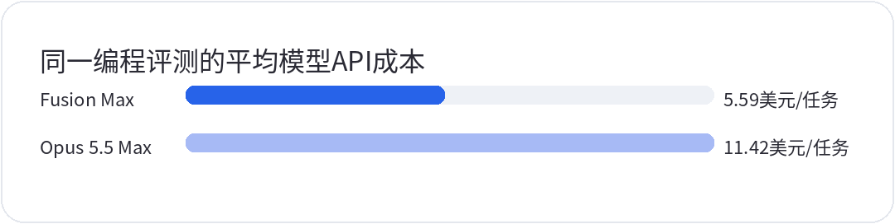

<div style="margin:0;padding:0;background:#f5f7fa;color:#2a2a34;font-size:16px;line-height:1.9;font-family:-apple-system,BlinkMacSystemFont,'SF Pro Text','PingFang SC','Hiragino Sans GB','Microsoft YaHei',Arial,sans-serif;font-variant-numeric:tabular-nums;font-feature-settings:'tnum' 1,'lnum' 1;text-align:left !important;text-align-last:left;letter-spacing:0;word-spacing:normal;white-space:normal;word-break:normal;box-sizing:border-box;"><div style="margin:0;background:#ffffff;padding:28px 22px 44px 22px;box-sizing:border-box;text-align:left !important;text-align-last:left;letter-spacing:0;word-spacing:normal;white-space:normal;word-break:normal;"><p style="display:block;width:100%;margin:0 0 12px 0;padding:0;color:#2763e9;font-size:10px;line-height:1.6;font-weight:650;letter-spacing:0.12em;text-align:center !important;text-align-last:center;word-spacing:normal;white-space:normal;word-break:normal;box-sizing:border-box;">美股 · 期权 · 资讯 · 观点</p><div style="margin:0 0 30px 0;padding:0;text-align:center !important;text-align-last:center;word-spacing:normal;white-space:normal;word-break:normal;box-sizing:border-box;"></div><div style="margin:0 0 0 0;padding:28px 0 0 0;text-align:left !important;text-align-last:left;letter-spacing:0;word-spacing:normal;white-space:normal;word-break:normal;box-sizing:border-box;"><div style="margin:0 0 12px 0;padding:0;text-align:left !important;line-height:1.2;border:0;display:flex;align-items:center;gap:10px;text-align-last:left;letter-spacing:0;word-spacing:normal;white-space:normal;word-break:normal;box-sizing:border-box;"><span style="display:inline-block;flex:0 0 auto;vertical-align:middle;color:#2763e9;font-size:12px;font-weight:850;letter-spacing:0.12em;line-height:1.2;text-transform:uppercase;border:0;box-sizing:border-box;">0 · FOCUS</span><span style="display:block;flex:1 1 auto;min-width:36px;vertical-align:middle;height:1px;margin:0 0 2px 0;background:#2763e9;line-height:1px;font-size:0;border:0;box-sizing:border-box;"></span></div><p style="margin:0 0 16px 0;padding:0;color:#2a2a34;font-size:22px;line-height:1.45;font-weight:850;text-align:left !important;letter-spacing:0;text-align-last:left;word-spacing:normal;white-space:normal;word-break:normal;box-sizing:border-box;">Terra的低价先落在token账单上</p><p style="margin:0 0 16px 0;padding:0;color:#454550;font-size:16px;line-height:1.9;font-weight:400;text-align:left !important;letter-spacing:0;word-spacing:normal;white-space:normal;word-break:normal;text-align-last:left;box-sizing:border-box;">10月26日，OpenAI官方API更新日志宣布GPT-6.1 Terra上线，标准API每100万输入token收费1美元、缓存输入0.05美元、输出5美元；BleepingComputer同日报道了上线与报价。企业现在有了一个公开可调用、价格明确的新选择，这些是调用费率。一项工作交出去要花多少钱，还得看完成过程。</p><p style="margin:0 0 16px 0;padding:0;color:#454550;font-size:16px;line-height:1.9;font-weight:400;text-align:left !important;letter-spacing:0;word-spacing:normal;white-space:normal;word-break:normal;text-align-last:left;box-sizing:border-box;">输入便宜，能降低反复读取文档、表格和界面的费用。多步agent仍要为推理过程与输出付费，调用工具也可能产生额外账单。一次失败若要重新读入上下文、再执行一遍，前面省下的输入费会被部分抵消。采购者需要把任务完成前的全部调用加起来，再计入人工复核时间，才能与原来的工作方式比较。</p><p style="margin:0 0 16px 0;padding:0;color:#454550;font-size:16px;line-height:1.9;font-weight:400;text-align:left !important;letter-spacing:0;word-spacing:normal;white-space:normal;word-break:normal;text-align-last:left;box-sizing:border-box;">长上下文尤其容易算错。官方模型文档规定，输入超过27.2万token时，整次请求的输入与缓存输入按标准费率的2倍计费，输出按1.5倍计费；缓存写入另有收费。因此，0.05美元不能代表所有缓存操作的成本，1美元也不能套用到每一次长文档请求。把所有文件都塞进上下文，可能改变原本看起来很便宜的账单。</p><p style="margin:0 0 16px 0;padding:0;color:#454550;font-size:16px;line-height:1.9;font-weight:400;text-align:left !important;letter-spacing:0;word-spacing:normal;white-space:normal;word-break:normal;text-align-last:left;box-sizing:border-box;">更难估的是错误成本。整理资料时，一个格式问题或许只需改动几秒；进入财务、采购等流程后，错误需要有人发现、解释和返工。试点时应固定任务样本与验收标准，把失败重试也记账；目前不能替模型预设某个成功率。Terra的报价给扩大试用提供了条件，企业能否把试用变成日常付费，还要看每个被验收任务的总成本是否下降。公开售价本身也不足以反推OpenAI的推理毛利。</p></div><div style="margin:30px 0 0 0;padding:28px 0 0 0;text-align:left !important;text-align-last:left;letter-spacing:0;word-spacing:normal;white-space:normal;word-break:normal;box-sizing:border-box;"><div style="margin:0 0 12px 0;padding:0;text-align:left !important;line-height:1.2;border:0;display:flex;align-items:center;gap:10px;text-align-last:left;letter-spacing:0;word-spacing:normal;white-space:normal;word-break:normal;box-sizing:border-box;"><span style="display:inline-block;flex:0 0 auto;vertical-align:middle;color:#2763e9;font-size:12px;font-weight:850;letter-spacing:0.12em;line-height:1.2;text-transform:uppercase;border:0;box-sizing:border-box;">1 · FOCUS</span><span style="display:block;flex:1 1 auto;min-width:36px;vertical-align:middle;height:1px;margin:0 0 2px 0;background:#2763e9;line-height:1px;font-size:0;border:0;box-sizing:border-box;"></span></div><p style="margin:0 0 16px 0;padding:0;color:#2a2a34;font-size:22px;line-height:1.45;font-weight:850;text-align:left !important;letter-spacing:0;text-align-last:left;word-spacing:normal;white-space:normal;word-break:normal;box-sizing:border-box;">Fusion把省钱交给路由，验收仍要自己算</p><p style="margin:0 0 16px 0;padding:0;color:#454550;font-size:16px;line-height:1.9;font-weight:400;text-align:left !important;letter-spacing:0;word-spacing:normal;white-space:normal;word-break:normal;text-align-last:left;box-sizing:border-box;">10月28日，GitHub官方宣布Copilot Fusion正式可用，按任务路由并协调底层模型，用户可选Standard、High或Max，管理员也能限制可用模型。它可以先用单模型处理，遇到难题再升级，或让一个模型起草、另一个评审；每次实际调用仍按底层模型各自的标准价格计费。</p><p style="margin:0 0 16px 0;padding:0;color:#454550;font-size:16px;line-height:1.9;font-weight:400;text-align:left !important;letter-spacing:0;word-spacing:normal;white-space:normal;word-break:normal;text-align-last:left;box-sizing:border-box;">独立评测方Artificial Analysis同日测试了Copilot CLI中的Fusion Max，并与Claude Code运行Claude Opus 5.5 Max的配置比较。其Coding Agent Index v2.0对3个子测试等权，Fusion的平均模型API成本为每测试任务5.59美元，对照为11.42美元。两套系统的配置不同，这项结果衡量的是整套编程agent的表现与费用，不能单独归功于某个模型。</p><p style="margin:4px 0 6px 0;padding:0;text-align:center !important;text-align-last:center;word-spacing:normal;white-space:normal;word-break:normal;box-sizing:border-box;"></p><p style="margin:0 0 16px 0;padding:0;color:#9a9aa8;font-size:12px;line-height:1.6;text-align:center !important;text-align-last:center;word-spacing:normal;white-space:normal;word-break:normal;box-sizing:border-box;">Artificial Analysis，2026年10月28日。Fusion由Copilot CLI运行，Opus由Claude Code运行；平均测试任务成本，不含人工验收或订阅费用，不承诺每个任务节省同比例。</p><p style="margin:0 0 16px 0;padding:0;color:#454550;font-size:16px;line-height:1.9;font-weight:400;text-align:left !important;letter-spacing:0;word-spacing:normal;white-space:normal;word-break:normal;text-align-last:left;box-sizing:border-box;">这项测试的平均API费用约减半，比较口径需要保留。这里统计了测试任务的平均调用成本，没有证明每个成功任务都便宜一半，也没有计入订阅费和人工审查。GitHub另向付费计划用户提供截至11月30日的临时30%模型费用折扣，不能把这项促销再乘到图中的结果上，凑出一个更低的长期成本。</p><p style="margin:0 0 16px 0;padding:0;color:#454550;font-size:16px;line-height:1.9;font-weight:400;text-align:left !important;letter-spacing:0;word-spacing:normal;white-space:normal;word-break:normal;text-align-last:left;box-sizing:border-box;">路由的经济性取决于判断难度是否准确。简单步骤少调用昂贵模型，便有机会节省费用；错误分配任务、增加评审或反复升级，也会把调用重新加回来。对GitHub母公司微软 <strong style="color:#2a2a34;font-weight:700;box-sizing:border-box;">MSFT</strong> 而言，更值得观察的是开发者是否持续接受系统替自己选择模型。企业则需要在同一代码库中核对验收率、重做次数和审查工时，连同回滚率及尾部时延一起看。API账单下降而返工增加，省下的钱未必能变成项目收益。</p></div><div style="margin:30px 0 0 0;padding:28px 0 0 0;text-align:left !important;text-align-last:left;letter-spacing:0;word-spacing:normal;white-space:normal;word-break:normal;box-sizing:border-box;"><div style="margin:0 0 12px 0;padding:0;text-align:left !important;line-height:1.2;border:0;display:flex;align-items:center;gap:10px;text-align-last:left;letter-spacing:0;word-spacing:normal;white-space:normal;word-break:normal;box-sizing:border-box;"><span style="display:inline-block;flex:0 0 auto;vertical-align:middle;color:#2763e9;font-size:12px;font-weight:850;letter-spacing:0.12em;line-height:1.2;text-transform:uppercase;border:0;box-sizing:border-box;">2 · FOCUS</span><span style="display:block;flex:1 1 auto;min-width:36px;vertical-align:middle;height:1px;margin:0 0 2px 0;background:#2763e9;line-height:1px;font-size:0;border:0;box-sizing:border-box;"></span></div><p style="margin:0 0 16px 0;padding:0;color:#2a2a34;font-size:22px;line-height:1.45;font-weight:850;text-align:left !important;letter-spacing:0;text-align-last:left;word-spacing:normal;white-space:normal;word-break:normal;box-sizing:border-box;">Helios机架已安装，生产负载还要验证</p><p style="margin:0 0 16px 0;padding:0;color:#454550;font-size:16px;line-height:1.9;font-weight:400;text-align:left !important;letter-spacing:0;word-spacing:normal;white-space:normal;word-break:normal;text-align-last:left;box-sizing:border-box;">10月27日，AMD官方披露初批Helios系统已在Meta安装并进入测试；TechTarget在10月29日报道了这项披露，并指出扩大部署的日期尚未公开。AMD <strong style="color:#2a2a34;font-weight:700;box-sizing:border-box;">AMD</strong> 与Meta <strong style="color:#2a2a34;font-weight:700;box-sizing:border-box;">META</strong> 这次推进到了真实系统测试阶段，现有信息仍不足以确认规模生产服务已开始。</p><p style="margin:0 0 16px 0;padding:0;color:#454550;font-size:16px;line-height:1.9;font-weight:400;text-align:left !important;letter-spacing:0;word-spacing:normal;white-space:normal;word-break:normal;text-align-last:left;box-sizing:border-box;">机架装好之后，客户还要把业务放进去运行。网络通信与冷却条件会影响系统能否稳定工作，供电和场地也要配套；软件需要适配，出了故障还要能恢复。TechTarget采访的产业分析师强调了这些交付条件。单张芯片的标称能力，无法直接回答一组机架在客户工作负载上能提供多少可用算力。</p><p style="margin:0 0 16px 0;padding:0;color:#454550;font-size:16px;line-height:1.9;font-weight:400;text-align:left !important;letter-spacing:0;word-spacing:normal;white-space:normal;word-break:normal;text-align-last:left;box-sizing:border-box;">第二供应商的价值，也要扣除迁移与长期维护的支出。若每次模型或软件版本更新都需要大量专门调优，采购折扣可能被工程工时吃掉；若适配成果能在后续项目复用，新增平台才更容易进入客户的常规预算。AMD公告与TechTarget报道均未给出同口径的Helios任务成本或能耗数据，不能据此宣布AMD已经证明了更便宜的训练或推理。</p><p style="margin:0 0 16px 0;padding:0;color:#454550;font-size:16px;line-height:1.9;font-weight:400;text-align:left !important;letter-spacing:0;word-spacing:normal;white-space:normal;word-break:normal;text-align-last:left;box-sizing:border-box;">对AMD，测试转为可验收交付，才有助于把合作预期落实到后续业务。对Meta，多一种可持续运行的硬件选择，才可能改善采购与扩容的议价空间。两家公司的利益在这一点上相交，但安装测试只是过程中的一站。未来2–4季度，应跟踪双方是否披露生产负载与正式服务进展，再对照交付相关收入。若有可比披露，还应核对实际利用率；缺少公开细节时，结论应保留，不能把未披露直接等同于测试失败。</p></div><div style="margin:30px 0 0 0;padding:28px 0 0 0;text-align:left !important;text-align-last:left;letter-spacing:0;word-spacing:normal;white-space:normal;word-break:normal;box-sizing:border-box;"><div style="margin:0 0 12px 0;padding:0;text-align:left !important;line-height:1.2;border:0;display:flex;align-items:center;gap:10px;text-align-last:left;letter-spacing:0;word-spacing:normal;white-space:normal;word-break:normal;box-sizing:border-box;"><span style="display:inline-block;flex:0 0 auto;vertical-align:middle;color:#2763e9;font-size:12px;font-weight:850;letter-spacing:0.12em;line-height:1.2;text-transform:uppercase;border:0;box-sizing:border-box;">3 · FOCUS</span><span style="display:block;flex:1 1 auto;min-width:36px;vertical-align:middle;height:1px;margin:0 0 2px 0;background:#2763e9;line-height:1px;font-size:0;border:0;box-sizing:border-box;"></span></div><p style="margin:0 0 16px 0;padding:0;color:#2a2a34;font-size:22px;line-height:1.45;font-weight:850;text-align:left !important;letter-spacing:0;text-align-last:left;word-spacing:normal;white-space:normal;word-break:normal;box-sizing:border-box;">未来2–4季度看验收成本能否下降</p><p style="margin:0 0 16px 0;padding:0;color:#454550;font-size:16px;line-height:1.9;font-weight:400;text-align:left !important;letter-spacing:0;word-spacing:normal;white-space:normal;word-break:normal;text-align-last:left;box-sizing:border-box;">未来2–4季度，企业更有理由按被验收的工作量采购AI。Terra压低一部分调用报价，Fusion尝试减少昂贵模型的使用，Helios扩展硬件选择，各自处理成本链条上的一段。它们还没有共同证明，最终交到业务部门手里的结果已经更便宜。</p><p style="margin:0 0 16px 0;padding:0;color:#454550;font-size:16px;line-height:1.9;font-weight:400;text-align:left !important;letter-spacing:0;word-spacing:normal;white-space:normal;word-break:normal;text-align-last:left;box-sizing:border-box;">软件端最有辨别力的观察，是同一批真实任务在相同质量门槛下能省下多少。汇总包含重试在内的API费与工具运行费，再计入人工复核，才能判断模型降价有没有转成总成本下降。若Terra需要频繁升级到更贵的模型才能过关，或者Fusion在促销结束后返工增加，低价拉动持续付费的判断就要下调。若验收率稳定、人工介入减少，优惠结束后仍能维持节省，路由与模型替换便有较强的经济依据。</p><p style="margin:0 0 16px 0;padding:0;color:#454550;font-size:16px;line-height:1.9;font-weight:400;text-align:left !important;letter-spacing:0;word-spacing:normal;white-space:normal;word-break:normal;text-align-last:left;box-sizing:border-box;">硬件端要看测试系统何时承担稳定生产任务，以及交付能否形成收入。客户可以拥有更多采购选项，却仍可能受制于软件适配和设施就绪。只有持续运行和扩容的证据增加，才适合提高对替代平台收入兑现的判断。一次安装消息，尚不足以支持把潜在合作规模完整计入近期业绩。</p><p style="margin:0 0 16px 0;padding:0;color:#454550;font-size:16px;line-height:1.9;font-weight:400;text-align:left !important;letter-spacing:0;word-spacing:normal;white-space:normal;word-break:normal;text-align-last:left;box-sizing:border-box;">这会改变评估AI公司的顺序。先看客户用相同预算交付了多少合格工作，再看厂商凭什么留住这笔支出。低token报价能让试验更便宜，利润兑现还需要可重复的交付。下一轮竞争中，客户会更愿意为便宜的调用付费，还是为少返工的结果付费？</p></div><div style="margin:34px 0 0 0;padding:0;border:1px solid #e4e7ed;border-radius:24px;background:#fafbfc;text-align:center !important;box-sizing:border-box;overflow:hidden;text-align-last:center;word-spacing:normal;white-space:normal;word-break:normal;"><p style="margin:0;padding:18px 16px;color:#6a6a78;font-size:14px;line-height:1.8;text-align:center !important;background:#fafbfc;box-sizing:border-box;text-align-last:center;word-spacing:normal;white-space:normal;word-break:normal;">长按识别二维码关注公众号，持续获取每日美股资讯与观点。</p><p style="margin:0;text-align:center !important;background:#ffffff;box-sizing:border-box;text-align-last:center;word-spacing:normal;white-space:normal;word-break:normal;"></p></div><p style="margin:28px 0 0 0;padding:22px 0 0 0;color:#9a9aa8;font-size:12px;line-height:1.8;text-align:center !important;text-align-last:center;word-spacing:normal;white-space:normal;word-break:normal;box-sizing:border-box;">免责声明：本文仅为个人市场观察和交易复盘，不构成任何投资建议；市场有风险，交易需谨慎。点击阅读原文可跳转博客。</p></div></div>
